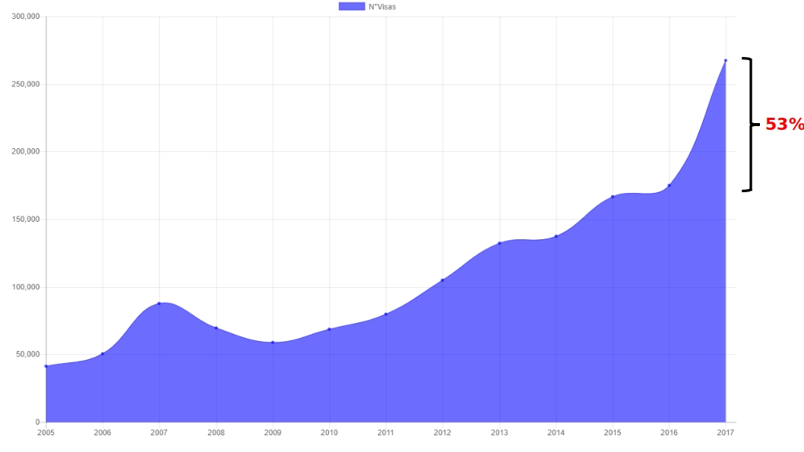
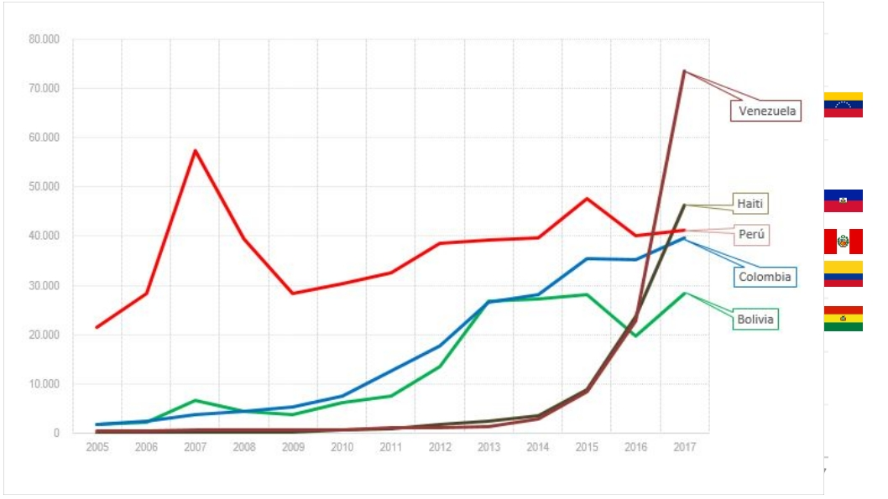
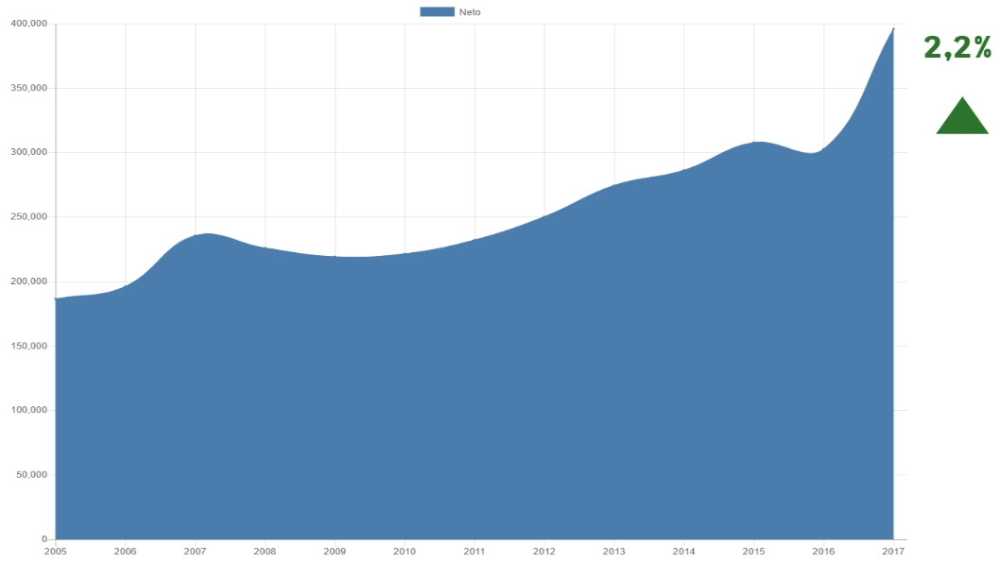
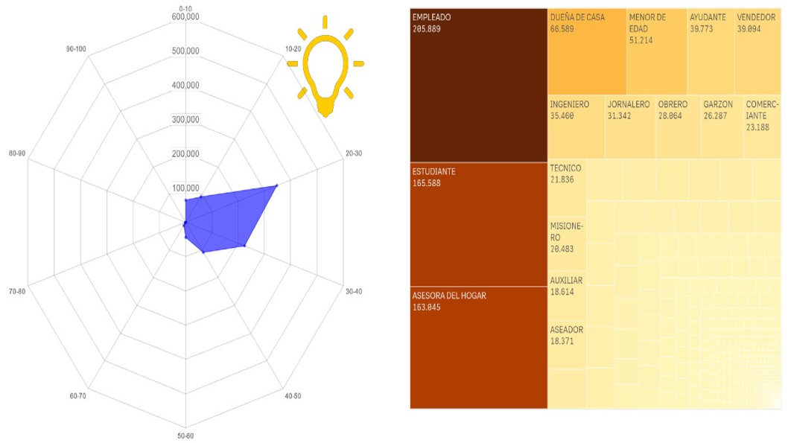
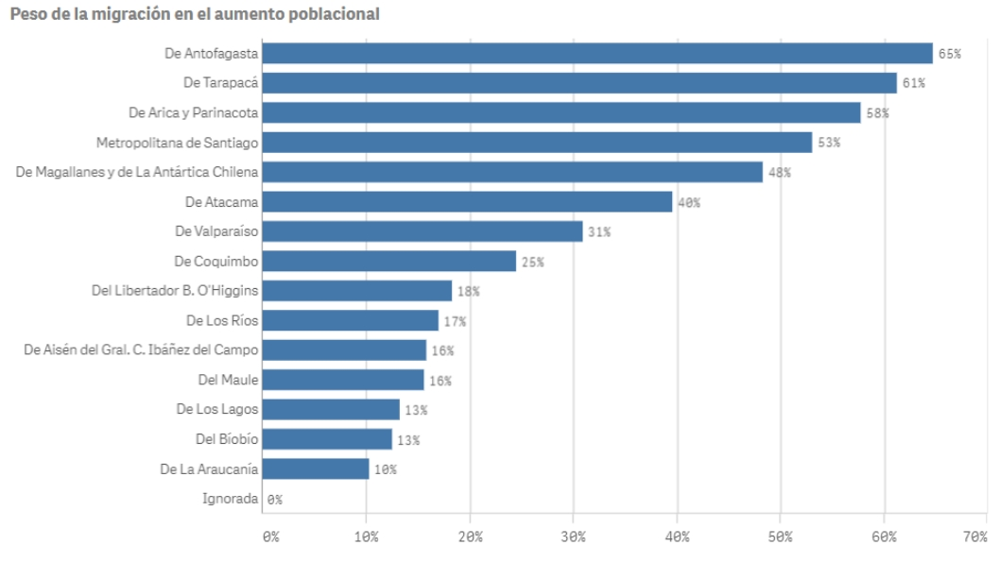
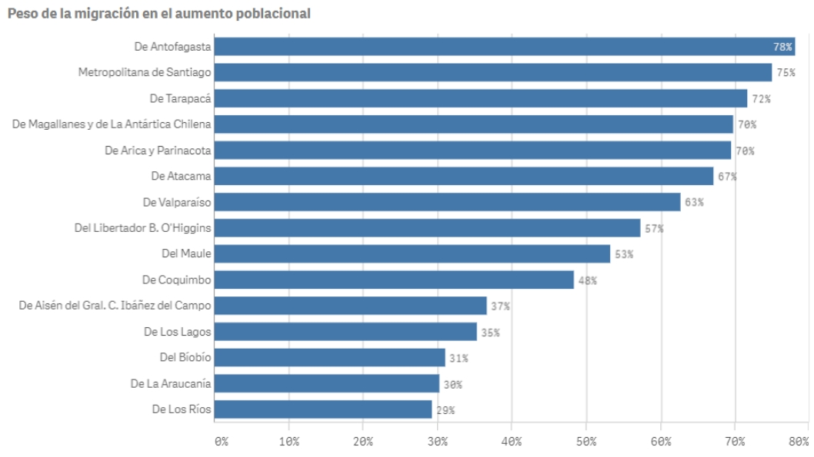

En los últimos años las solicitudes de visas en Chile han aumentado considerablemente. 2017 fue un 53% más que 2016. |
 |
Históricamente quienes nos visitan han sido de los países vecinos del norte, Perú y Bolivia, situación que en los último años ha variado con la lllegada de migrantes provenientes de Venezuela y Haití. |
 |
Los inmigrantes son el principal factor que explica el aumento neto de la población en los últimos años. (Neto: Considera el ingreso más nacimientos y defunciones.)2,2% = Estimado Neto de Crecimiento / Población Censo, ambos datos año 2017. |
 |
De las personas que están llegando, la gran mayoría se encuentra en edad de trabajar (20 a 30) y realizando alguna actividad productiva (empleado) en el país. |
 |
Históricamente el mayor impacto de los inmigrantes en el aumento de la población ha sido en el norte. |
 |
Situación que se ha revertido en los últimos años con la llegada de migrantes que prefieren Antofagasta y la Región Metropolitana como lugar de residencia. |
 |